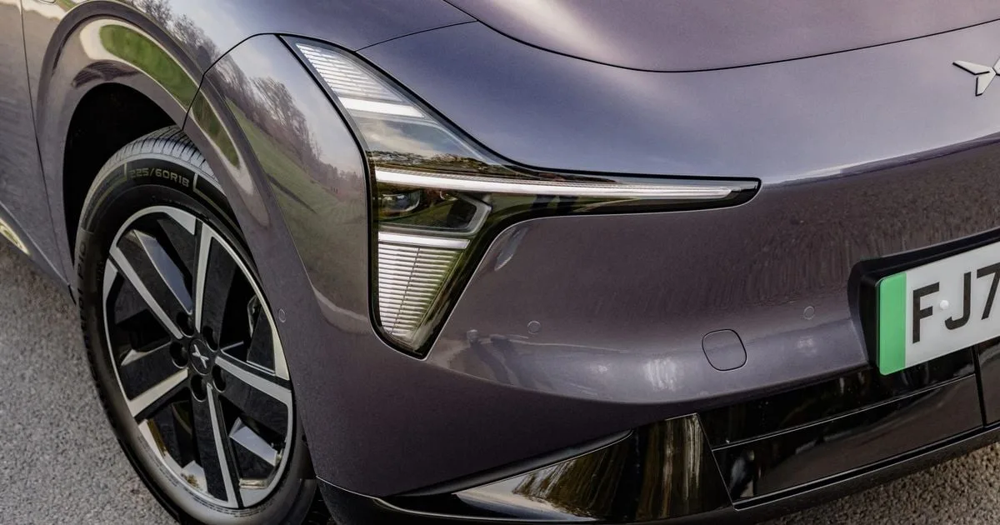

Xpeng 小鵬 · AI 輔助汽車設計2026-11-17
小鵬怎麼用 AI 做車輛設計
小鵬用自家內部 AI 平台做外觀、內裝、水箱罩與車燈的創意發想，也拿 AI 分析客戶回饋；數位工具負責創作，實體模型改成只做驗證。
AI 設計代理：能依設計師指示自己發想、出圖或解題的 AI 助手，設計師像導演一樣分派工作
看更多
Xpeng says artificial intelligence is helping shape its cars, with designers expected to direct teams of digital assistants in the future.
【誰在做】小鵬創意設計總監 Rafik Ferrag（領導廣州設計中心、兩代 P7 的設計者）在倫敦工作坊上說明，CarExpert 報導（台北 11/17）。廣州與上海兩個設計中心先在早期提案互相競爭，再分工合作。 【用了哪些 AI】小鵬自行開發生成器與 AI 工具，透過內部平台給設計師使用；原因之一是保密，避免未發表的設計流到網路上。報導沒有點名使用哪家模型。 【流程怎麼走】創意階段大量用在外觀、內裝、水箱罩、車燈設計；另用 AI 分析資料、做競品比較、解讀客戶「為什麼不喜歡」的回饋。L03 的內裝原本較激進，因客戶回饋改成圓潤放鬆的座艙。Ferrag 說數位工具越來越多用來創作與收斂設計，實體模型與 3D 列印改為驗證用，「以前正好相反」。未來設計師會「當自己的導演」，決定給不同 AI 設計代理多少自由。 【限制】Ferrag 沒有說 L03 哪些部件（如果有）來自 AI 生成提案；所述是整體流程，沒有公布量化成效，僅提到「速度快很多」。